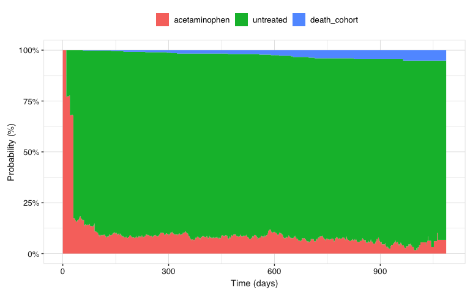

OmopMultistate estimates how individuals move between clinically meaningful states over time using cohort records from the OMOP Common Data Model. Each state is represented by a cohort definition, while a transition matrix declares which movements between states are possible.
The package provides a workflow to:
- prepare an OMOP
cohort_tablein the long format used by mstate; - estimate state occupation probabilities overall or for specific initial states;
- repeat the analysis across user-defined strata; and
- return results as a standard
summarised_resultobject and visualise them over time.
Ecosystem
OmopMultistate is part of the ecosystem of packages defined by omopgenerics. For more details on the ecosystem you can read the Tidy R programming with the OMOP Common Data Model book.
Tested sources
| Source | Driver | CDM reference | Status |
|---|---|---|---|
| Local R data frame | N/A | omopgenerics::cdmFromTables() |
 |
| In-memory DuckDB database | duckdb | CDMConnector::cdmFromCon() |
 |
Installation
You can install the development version of OmopMultistate from GitHub with:
# install.packages("pak")
pak::pak("OHDSI/OmopMultistate")Example
The following example models acetaminophen treatment, discontinuation, and restarting treatment, with death as an absorbing state. It uses the synthetic synpuf-1k dataset, which omock downloads on first use, and a temporary DuckDB database. This example requires omock, CohortConstructor, CodelistGenerator, CDMConnector, and duckdb; plotting also requires visOmopResults, ggplot2, and scales.
The function help pages provide smaller examples using the bundled GiBleed dataset and a model of first discontinuation, where untreated is absorbing. Those examples run locally without a dataset download or database connection.
library(OmopMultistate)
library(omock)
library(CohortConstructor)
library(CodelistGenerator)
library(dplyr)
cdm <- mockCdmFromDataset(datasetName = "synpuf-1k", source = "duckdb")
cdmWe use CohortConstructor to create three cohorts: acetaminophen treatment, discontinuation (untreated), and death (death_cohort). Cohort names must match the state names in the transition matrix. Cohort start dates mark state entries; reaching a cohort end date alone does not create a state change, so we construct discontinuation explicitly.
codes <- getDrugIngredientCodes(cdm = cdm, name = "acetaminophen", nameStyle = "{concept_name}")
# acetaminophen cohort
cdm$acetaminophen <- conceptCohort(cdm = cdm, conceptSet = codes, name = "acetaminophen")
#> ℹ Subsetting table drug_exposure using 6620 concepts with domain: drug.
#> ℹ Combining tables.
#> ℹ Creating cohort attributes.
#> ℹ Applying cohort requirements.
#> ℹ Merging overlapping records.
#> ✔ Cohort acetaminophen created.
# death cohort
cdm$death_cohort <- deathCohort(cdm = cdm, name = "death_cohort")
#> ℹ Applying cohort requirements.
#> ✔ Cohort death_cohort created.
# untreated cohort
cdm$untreated <- cdm$acetaminophen |>
padCohortEnd(days = 1L, requireFullContribution = TRUE, name = "untreated") |>
padCohortDate(days = 0L, indexDate = "cohort_end_date", cohortDate = "cohort_start_date") |>
renameCohort("untreated")
# bind them together
cdm <- bind(cdm$acetaminophen, cdm$death_cohort, cdm$untreated, name = "my_study")
# the created cohort
settings(cdm$my_study)
#> # A tibble: 3 × 6
#> cohort_definition_id cohort_name cdm_version vocabulary_version
#> <int> <chr> <chr> <chr>
#> 1 1 acetaminophen 5.4 v5.0 29-APR-16
#> 2 2 death_cohort <NA> <NA>
#> 3 3 untreated 5.4 v5.0 29-APR-16
#> # ℹ 2 more variables: subset_cohort_table <chr>, subset_cohort_id <chr>Requiring the day after treatment end to be within observation prevents loss to follow-up from being counted as discontinuation.
The permitted transitions are:
-
acetaminophentountreated -
acetaminophentodeath_cohort -
untreatedtoacetaminophen -
untreatedtodeath_cohort
trans <- transMat(
x = list(c(2, 3), c(1, 3), c()),
names = c("acetaminophen", "untreated", "death_cohort")
)
trans
#> to
#> from acetaminophen untreated death_cohort
#> acetaminophen NA 1 2
#> untreated 3 NA 4
#> death_cohort NA NA NARows describe the state being left and columns describe the destination. An NA entry forbids a transition; a row containing only NA makes that state absorbing.
Some records can occur on the same date. We resolve these ties in their logical order, placing death last because it is an absorbing state. By default, stateStep = 0.01 separates successive priority ranks by hundredths of a day. Without a hierarchy, simultaneous competing states cause an error.
stateHierarchy <- c("acetaminophen", "untreated", "death_cohort")Each person’s time zero is their first entry into a state with an outgoing transition. Here, that is their first recorded treatment or discontinuation. Follow-up ends at observation end by default. A supplied censorDate column replaces that default, with missing dates falling back to observation end; custom dates are not automatically capped at observation end. Use a consistent endpoint across a person’s state records for an administrative censor date.
You can prepare the data in the long format used by mstate and then fit other models:
msData <- prepareMultistateData(
cohort = cdm$my_study,
trans = trans,
stateHierarchy = stateHierarchy
)
msData |>
arrange(subject_id, Tstart) |>
head(10)
#> An object of class 'msdata'
#>
#> Data:
#> subject_id from to trans Tstart Tstop status from_name to_name
#> 1 1 1 2 1 0 30 1 acetaminophen untreated
#> 2 1 1 3 2 0 30 0 acetaminophen death_cohort
#> 3 1 2 1 3 30 373 1 untreated acetaminophen
#> 4 1 2 3 4 30 373 0 untreated death_cohort
#> 5 1 1 2 1 373 403 1 acetaminophen untreated
#> 6 1 1 3 2 373 403 0 acetaminophen death_cohort
#> 7 1 2 1 3 403 532 1 untreated acetaminophen
#> 8 1 2 3 4 403 532 0 untreated death_cohort
#> 9 1 1 2 1 532 552 1 acetaminophen untreated
#> 10 1 1 3 2 532 552 0 acetaminophen death_cohortTstart and Tstop are days since time zero. status = 1 identifies the observed transition; other possible transitions in the interval have status = 0.
To estimate state occupation probabilities, use summariseMultistateProbabilities(). Its followUpDays argument limits the time points returned after fitting; use censorDate to change the input follow-up endpoint.
result <- summariseMultistateProbabilities(
cohort = cdm$my_study,
trans = trans,
stateHierarchy = stateHierarchy
)When run interactively, these functions can print informational (ℹ) messages about records that were excluded. For example, a person who has a death record but never enters an eligible initial state cannot contribute to this analysis. These messages describe the input data; they are not R warnings.
tidy(result) |>
head()
#> # A tibble: 6 × 10
#> cdm_name initial_state variable_name variable_level probability
#> <chr> <chr> <chr> <chr> <dbl>
#> 1 synpuf-1k overall prob_acetaminophen 0 1
#> 2 synpuf-1k overall prob_untreated 0 0
#> 3 synpuf-1k overall prob_death_cohort 0 0
#> 4 synpuf-1k overall prob_acetaminophen 10 0.770
#> 5 synpuf-1k overall prob_untreated 10 0.230
#> 6 synpuf-1k overall prob_death_cohort 10 0
#> # ℹ 5 more variables: cohort_table_name <chr>, follow_up_days <chr>,
#> # state_hierarchy <chr>, state_step <chr>, transitions <chr>After tidy(), variable_name identifies the destination state (for example, prob_untreated), variable_level contains elapsed days as character values, and probability is a proportion between zero and one. initial_state gives the state on which the probabilities are conditioned. initial_state = "overall" weights the state-specific estimates by the observed starting-state distribution. settings(result) records the analysis settings, including the transition structure.
Probabilities are returned at model time points rather than for every day. A row at exactly followUpDays is not guaranteed.
You can visualise now the results. States are displayed in the same order as they appear in the transition matrix:
result |>
filterGroup(initial_state == "acetaminophen") |>
plotMultistateProbabilities()
Stratification
Add columns that are constant within each person before requesting strata. The following fits models by sex as well as an unstratified model:
cdm$my_study <- PatientProfiles::addSex(cdm$my_study)
bySex <- summariseMultistateProbabilities(
cohort = cdm$my_study,
trans = trans,
strata = list("sex"),
followUpDays = 365,
stateHierarchy = stateHierarchy
)
bySex |>
filterGroup(initial_state == "acetaminophen") |>
filterStrata(sex == "Female") |>
tidy() |>
head()
#> # A tibble: 6 × 10
#> cdm_name initial_state sex variable_name variable_level probability
#> <chr> <chr> <chr> <chr> <chr> <dbl>
#> 1 synpuf-1k acetaminophen Female prob_acetaminophen 0 1
#> 2 synpuf-1k acetaminophen Female prob_untreated 0 0
#> 3 synpuf-1k acetaminophen Female prob_death_cohort 0 0
#> 4 synpuf-1k acetaminophen Female prob_acetaminophen 10 0.746
#> 5 synpuf-1k acetaminophen Female prob_untreated 10 0.254
#> 6 synpuf-1k acetaminophen Female prob_death_cohort 10 0
#> # ℹ 4 more variables: follow_up_days <chr>, state_hierarchy <chr>,
#> # state_step <chr>, transitions <chr>Use strata = list("sex", c("sex", "age_group")) when an age_group column is also present to request both sex-specific and joint sex and age models. Missing strata values are labelled "Missing". A value of "overall" in a strata column identifies a result pooled across that variable. If a model cannot be fitted for a stratum, an informational message explains the error and that stratum contributes no probability rows.
Filtering with filterStrata(sex == "overall") selects the unstratified model. Passing several strata to plotMultistateProbabilities() creates separate panels; timeScale = "years" converts the x-axis from days to years.